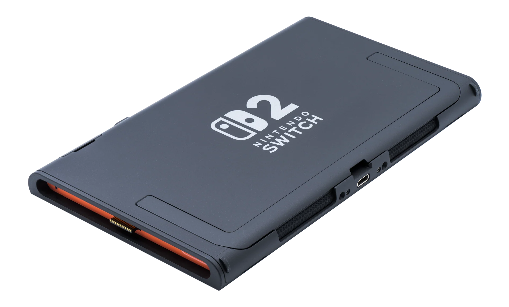

Switch 2, Nintendo'nun taşınabilir ve televizyona bağlanabilen konsol fikrini korurken ekranı, depolamayı ve görüntü çıkışını yeniliyor. Kağıt üzerindeki yükseltme belirgin; fakat herkes için aynı ölçüde gerekli değil. Özellikle Switch OLED kullananlar için karar, yeni oyunlara duyulan ilgiyle pil ve ekran tercihleri arasındaki dengeye bağlı.
Ekran ve görüntü: en görünür değişiklik
Nintendo'nun teknik özelliklerine göre Switch 2, 7,9 inçlik LCD ekranda 1920 × 1080 çözünürlük, HDR10 ve değişken yenileme hızı sunuyor. Switch OLED'in ekranı 7 inç OLED ve 1280 × 720 çözünürlükte. Switch 2'nin ekranı daha büyük ve daha yüksek çözünürlüklü; ancak OLED modelinin kendi kendini aydınlatan ekranı, siyah düzeyleri ve kontrast açısından ayrı bir üstünlüğe sahip. Dolayısıyla yeni model her kullanıcı için görüntü kalitesinde tartışmasız bir ilerleme sayılmaz.
Dock üzerinden uyumlu bir televizyona çıkışta Nintendo en fazla 4K çözünürlükte 60 kare/saniye, belirli daha düşük çözünürlüklerde ise 120 kare/saniyeye kadar destek belirtiyor. Bu değerler her oyunun bu çözünürlük ve hızlarda çalışacağı anlamına gelmiyor; sonuç oyun, ekran ve kullanılan görüntü ayarlarına bağlı.
Depolama artıyor, pil süresi kısalabiliyor
Switch 2'nin 256 GB dahili depolaması, Switch OLED'in 64 GB'ına kıyasla daha geniş. Ancak sistemin bir kısmı işletim sistemi için ayrılıyor ve depolama ihtiyacı oyunların boyutuna göre değişiyor. Genişletme için Switch 2, yalnızca microSD Express kartlarını oyun depolamak amacıyla destekliyor; eski microSD kartlar ekran görüntüsü ve videoları kopyalamak için kullanılabiliyor.
Pil tahmini ise önemli bir ödünleşim: Nintendo Switch 2 için yaklaşık 2–6,5 saat, Switch OLED için yaklaşık 4,5–9 saat bildiriyor. Bunlar üreticinin yaklaşık değerleri; oynanan oyuna ve kullanım koşullarına göre değişebiliyor. Uzun süre prizden uzakta oynayanlar için yeni ekran ve donanım kazanımlarının karşılığı daha sık şarj etmek olabilir.
Yeni özellikler ve oyun uyumluluğu
Joy-Con 2 kumandalarındaki sensörler, uyumlu oyunlarda fare benzeri kontrol kullanımına olanak veriyor. Konsolda dahili mikrofon ve çevrimiçi GameChat özellikleri de bulunuyor; çevrimiçi işlevlerin bazıları internet bağlantısı ve Nintendo Switch Online üyeliği gerektirebiliyor. Bu yeniliklerin pratik değeri, oynadığınız oyunların onları ne kadar iyi kullandığına bağlı.
Nintendo, Switch oyunlarının bir bölümünün Switch 2'de oynanabildiğini belirtiyor; uyumluluk her oyun ve aksesuar için garanti edilmiyor. Kütüphanenizdeki belirli oyunları veya ekipmanları kullanmaya devam etmek istiyorsanız satın alma öncesinde Nintendo'nun uyumluluk sayfasını kontrol etmek en güvenlisi.
Kimler için anlamlı bir yükseltme?
- İlk kez Switch alacaklar: Yeni nesil oyunları ve daha yüksek çözünürlüklü ekranı önemsiyorsanız Switch 2 daha uzun vadeli bir başlangıç olabilir.
- Eski Switch kullananlar: Daha büyük ekran, daha geniş depolama ve yeni oyunlara erişim belirgin fark yaratabilir.
- Switch OLED sahipleri: Yeni özel oyunlar ve performans sizin için önemliyse yükseltme cazip olabilir. OLED ekranı ve daha uzun üretici pil tahminini tercih ediyorsanız mevcut konsolunuz da hâlâ güçlü yanlara sahip.
Özetle Switch 2, taşınabilir konsolu baştan tanımlamıyor; mevcut deneyimi daha yüksek çözünürlük, daha yeni oyunlar ve ek kontrol seçenekleriyle ileri taşıyor. Yükseltme kararını yalnızca 4K veya ekran boyutu gibi başlıklara göre vermeyin: oynamak istediğiniz oyunları, pil beklentinizi ve elinizdeki konsolun modelini birlikte değerlendirin.
Kaynaklar ve yöntem
- Nintendo. Nintendo Switch 2 Technical Specs. Ekran, TV çıkışı, depolama, bağlantı ve pil tahminleri için üreticinin teknik özellikleri. Resmî özellikler.
- Nintendo. Nintendo Switch Technical Specs. Switch OLED ekran, depolama ve pil tahminleriyle karşılaştırma için. Resmî özellikler.
- Nintendo. Nintendo Switch 2 FAQ. Oyun ve aksesuar uyumluluğu, GameChat ve sistem işlevleri için üretici açıklamaları. Resmî SSS.
Teknik karşılaştırmadaki veriler Nintendo'nun yayımladığı üretici değerleridir; bağımsız laboratuvar performans testi değildir. Pil değerleri yaklaşık üretici tahminidir. Kaynaklar 8 Kasım 2026 tarihinde kontrol edildi.